Every so often a man finds the thing he was put on this earth to do. Some people find God. Some find a five-a-side team that finally clicks. This is the story of a man who found his calling was making the police believe something terrible was happening to him — and discovered, much to his own delight, that there is no feeling on the planet quite like being taken completely seriously. It started as a dare. It ended as a vocation.
The beer garden out the back of the Feathers, gone eleven, four pints in. Someone says the thing that starts everything — it changes depending on who's telling it by now. Bet you won't ring 999 on yourself. Not on anyone else. On himself.
It gets a laugh before anyone's even done it. He doesn't think past the dare. Somebody's phone is already in his hand, and somebody else already has theirs out filming.
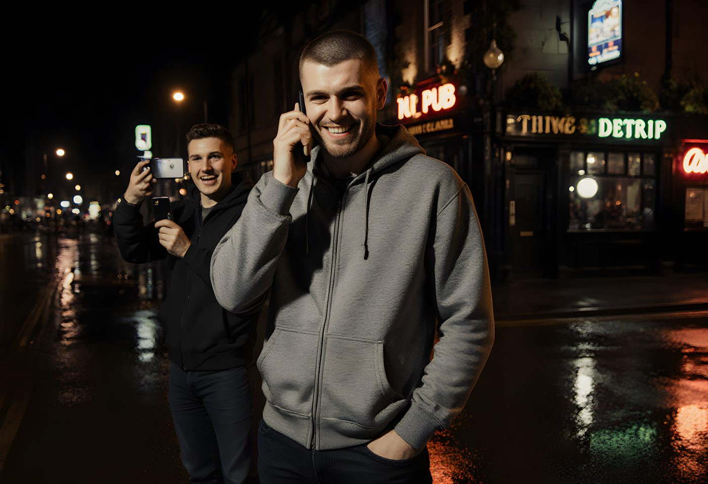
Out on the pavement, away from the noise, and it turns out dialling three nines is a bigger swallow than four pints of confidence made it look. His voice comes out steadier than he feels — turns out he can lie this convincingly, and nobody on the other end has any reason yet to doubt him.
Behind him, his mate's filming, shoulders shaking with the effort of staying quiet.
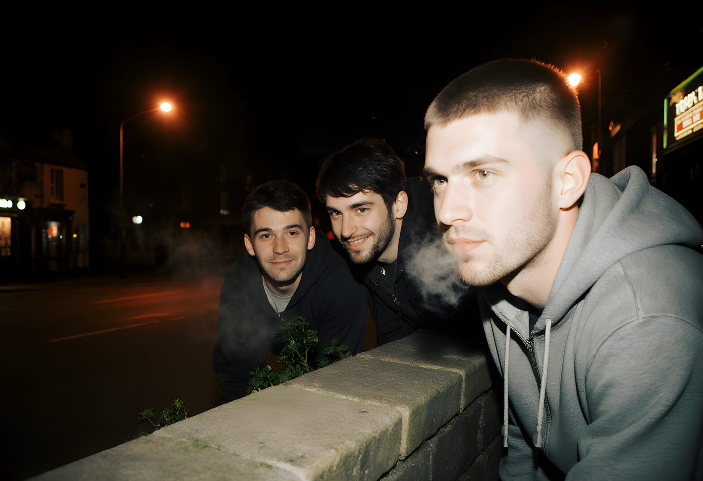
Nobody plans for the waiting. Four grown men crouched behind a garden wall like it's still school, not sure it even worked. This is the part where it could still have died as a one-off story. It doesn't get that chance.
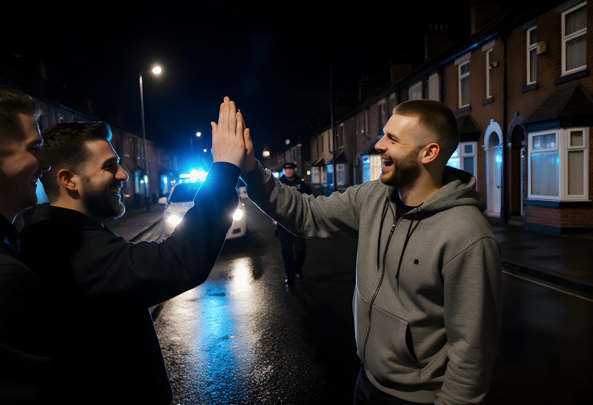
A car turns up — blue light washing the wet tarmac — and for one second before anyone speaks he feels something with no name yet. Not fear, which is what four pints and common sense say he should feel, but something closer to relief. Being noticed, it turns out, is the whole thing.
He's too busy performing sheepish for the officer to notice that.
A few nights later, different pub, a crowd who weren't there and can't check the details. He tells it again — and the retelling lands better than the real night did. He notices himself adding things. The officer gets sterner each telling. By the third go he's written a better draft of his own life than the one that happened.
Nobody in that pub knows it, but they've just watched the actual addictive part happen, and it wasn't the police.
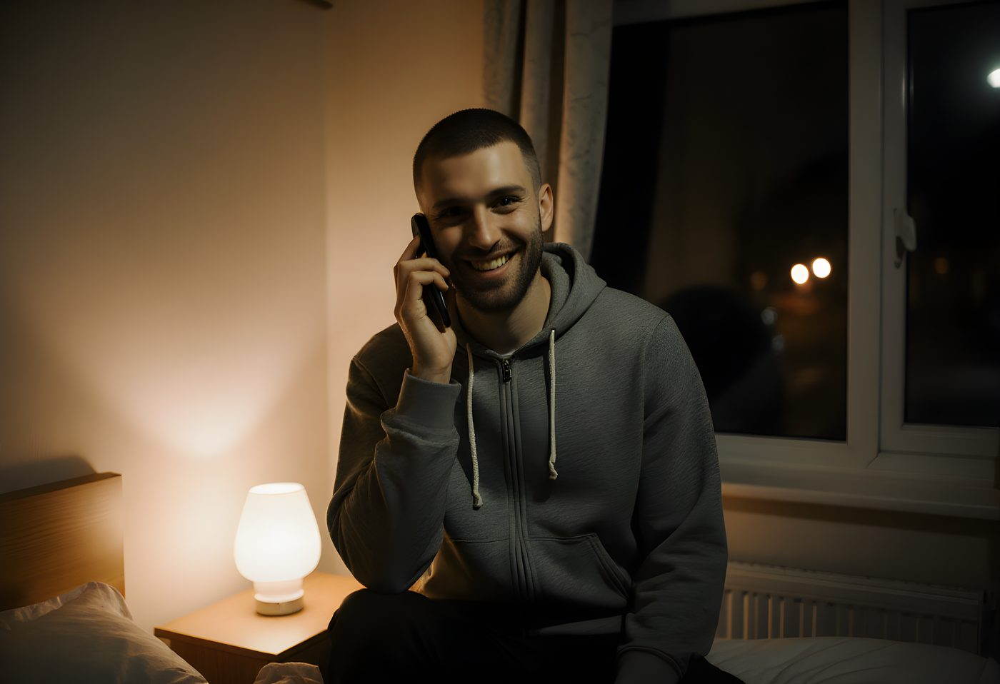
No mates. No audience, no tenner riding on it. Sat on the edge of his own bed, curtains open on an empty street, he dials again anyway. The report's a size bigger this time — not a bloke loitering, a door being tried, twice. He adds detail without needing to be dared. The nervous grin's gone. This one's just excited.
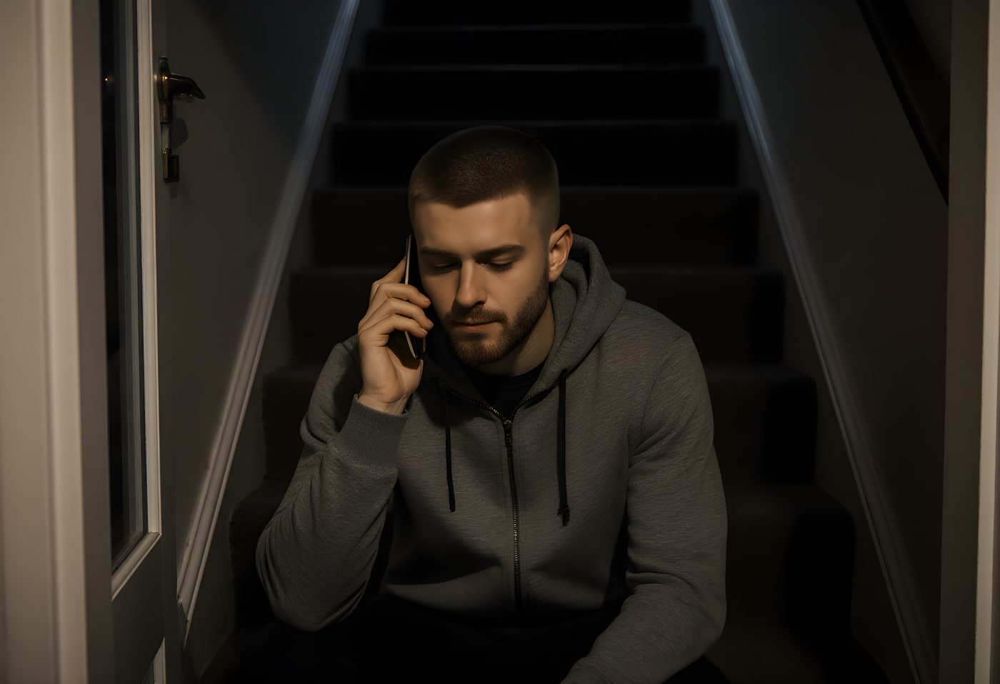
Afterwards, sat on the stairs in a silent house, phone still warm against his leg. No claps on the back this time, no group chat lighting up — and he clocks, with something like delight, that he didn't need any of that. The feeling holds up completely on its own. This is the moment it stops being about attention and starts being about something closer to a hobby he's just discovered he's brilliant at.
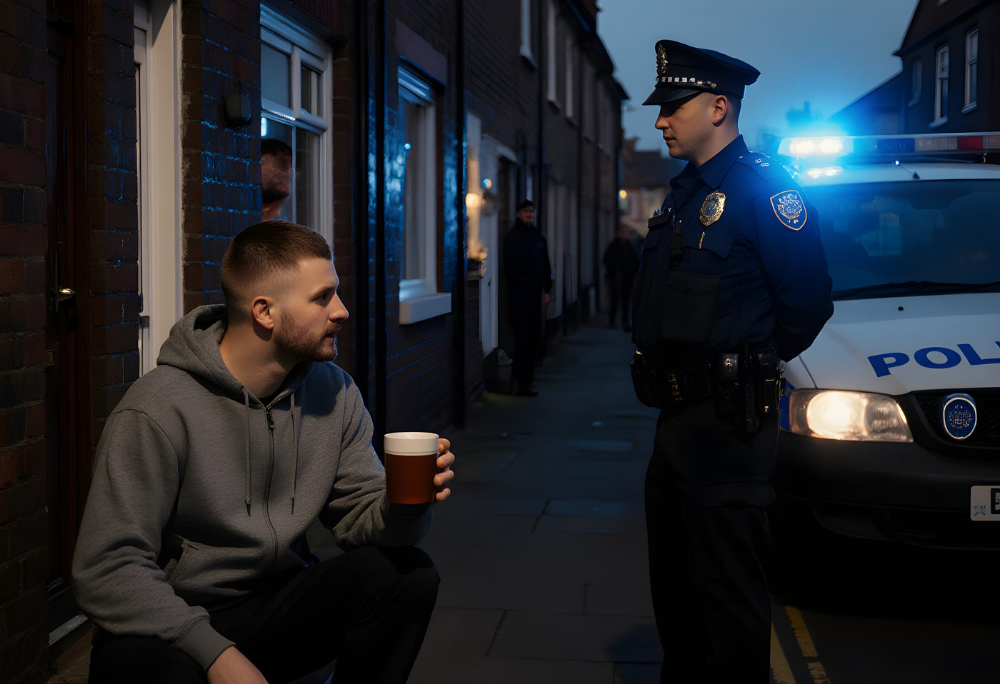
Enough times, spaced out carefully, that it stops being an event and starts being routine. Tea on the step. First-name terms with whichever officer's drawn the short straw. The street's stopped twitching its curtains. The dare is ancient history. Everyone involved has quietly agreed this is manageable.
That agreement is about to get a lot more expensive.
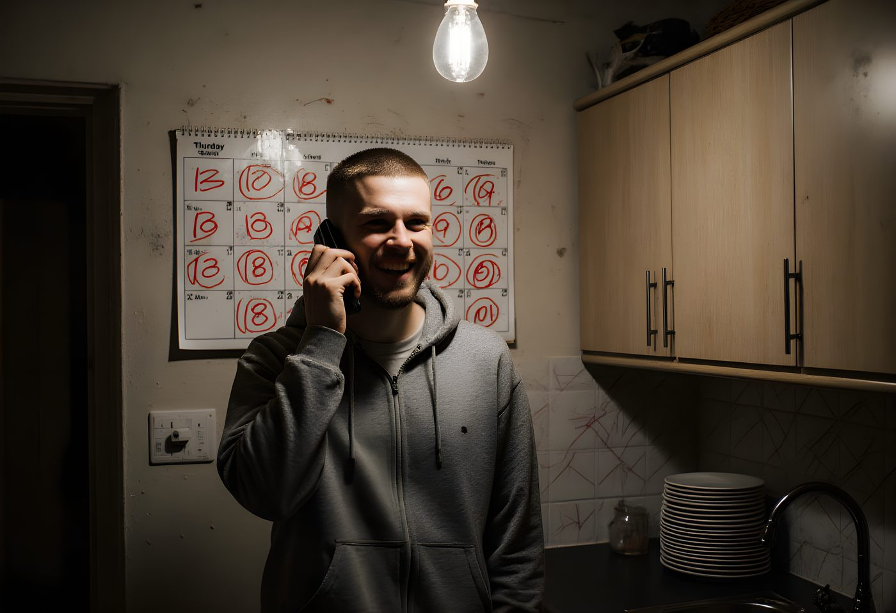
A calendar goes up on the kitchen wall, nominally for shifts and dentist appointments. In practice it becomes something closer to a scoreboard, because somewhere around here he clocks the pattern that runs the rest of this story: the bigger the call, the bigger the response, and the bigger the response, the better he feels. It's not complicated. It's basically darts.
Most people who imagine a 3am knock from the police feel dread. He started leaving the porch light on for them.
Third parties are all well and good, but somewhere past the helicopter he runs out of other people to report. So this time, when the call handler asks what's happening, he reaches for the only subject left he hasn't tried: himself.
There is no knife. There is a butter knife in a cutlery drawer, and a man who has just discovered the single most efficient sentence in the English language for getting a lot of police very interested in you very quickly.
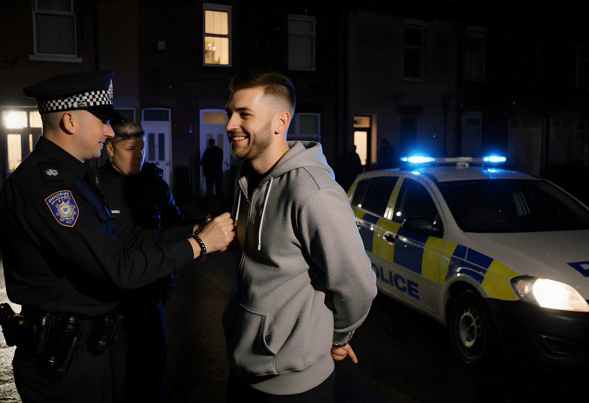
More turn up than ever before — enough that the street looks like something's actually happened, for once. He doesn't run, doesn't shout. He puts his wrists out almost helpfully. The officers are trained for fear, trained for aggression. Nobody trained them for a man who looks, when the cuffs click shut, like he's just been handed a trophy.
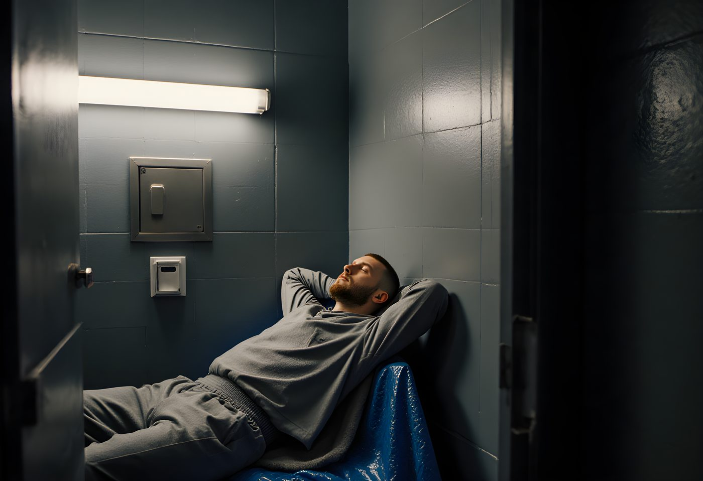
Property bagged, laces gone, a grey custody tracksuit that fits nobody properly. And then the door, and the particular quiet of a cell at two in the morning.
He lies back on the thin blue bench like a man who's checked into a hotel he's been trying to get a booking at for years. Hands behind his head. So obviously content that the custody sergeant on the hatch actually stops to check he's alright.
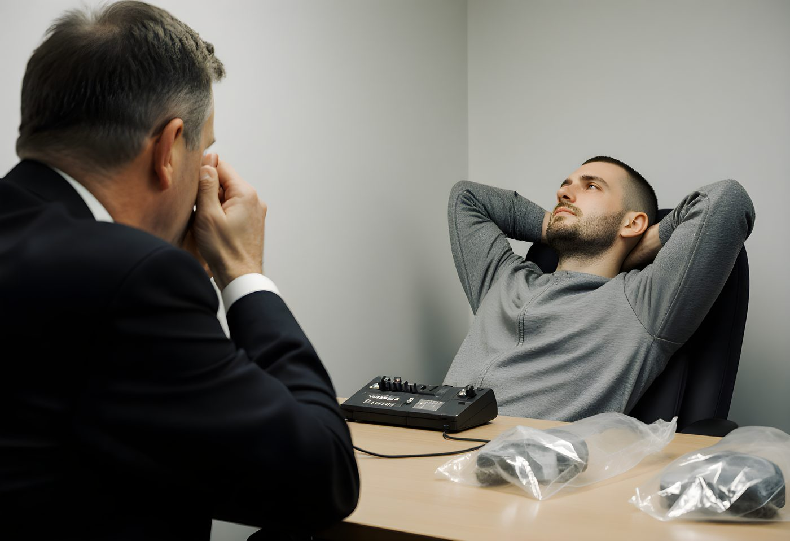
He waves off the solicitor — didn't fancy one, wanted to enjoy this properly. The detective's clearly seen this exact look on a face before; it's tired disbelief more than anger by now. The tape runs. He doesn't walk anything back. Given a room, an audience, and a machine that's actually recording every word, he embellishes.
A caution for wasting police time. Bail conditions nobody's especially bothered enforcing on a man who keeps confessing to butter knives. A safeguarding referral, because somewhere in the system his file now reads less "criminal" and more "concern" — which, if you think about it for two seconds, is its own small tragedy: the more seriously he tries to be taken, the more everyone official decides he mustn't be.
His mates stop finding it funny somewhere around the second arrest. He tells himself he doesn't mind. He's found something that doesn't need an audience to work.
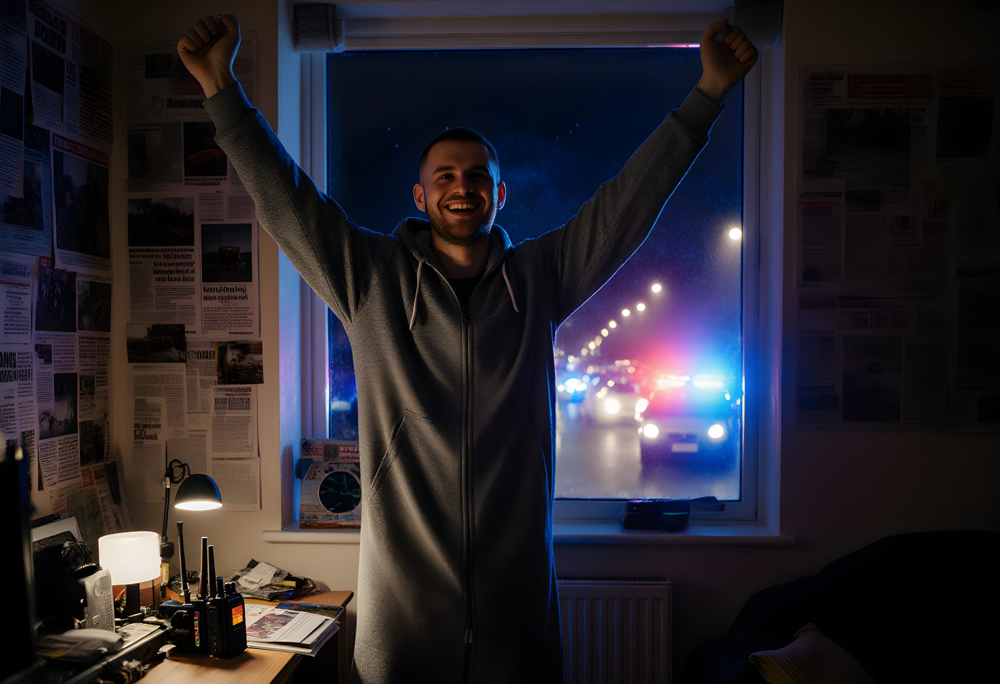
Whatever this started as, it isn't that any more. Scanner glowing on the desk, clippings of his own name on the wall, blue and red pouring through the window from vehicles he called there himself, arms half-raised for applause nobody else in the room is giving him.
He has found the thing he was put on this earth to do, and it turns out it was this. Some men get a five-a-side team. He got a reason to live.